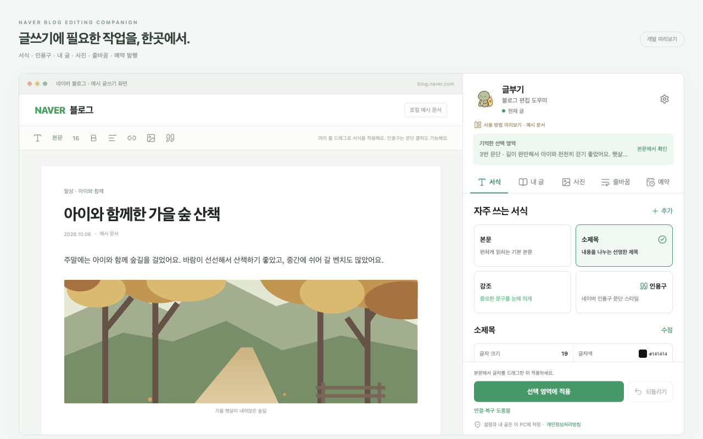
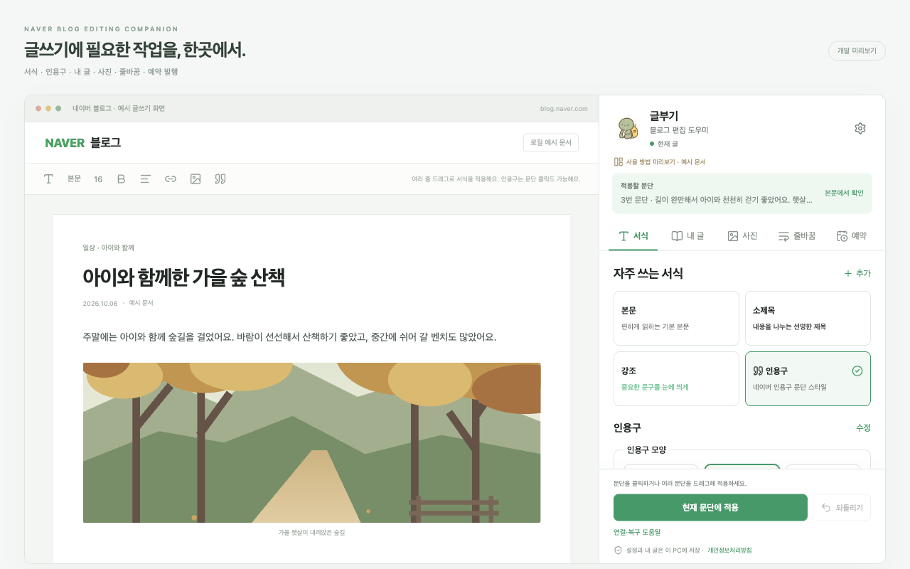
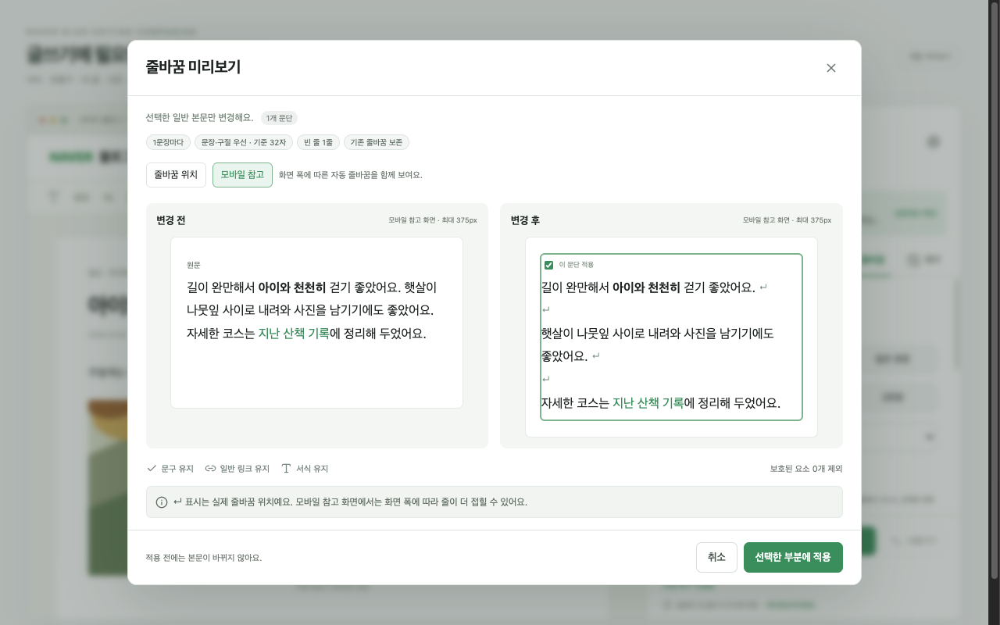
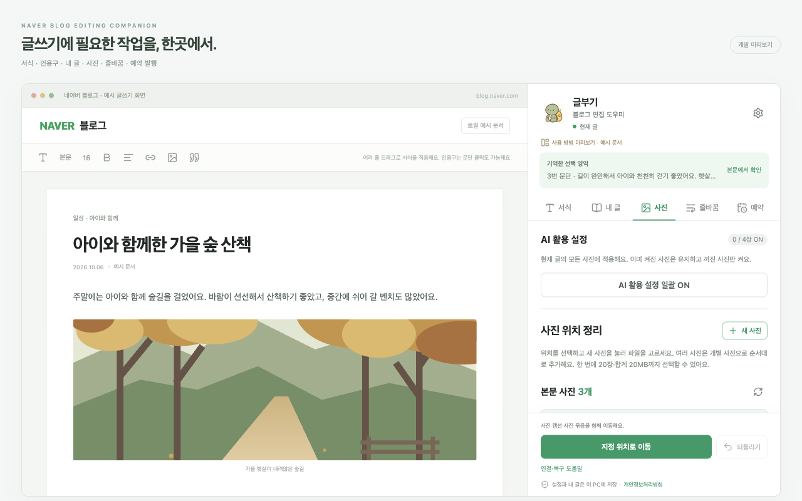
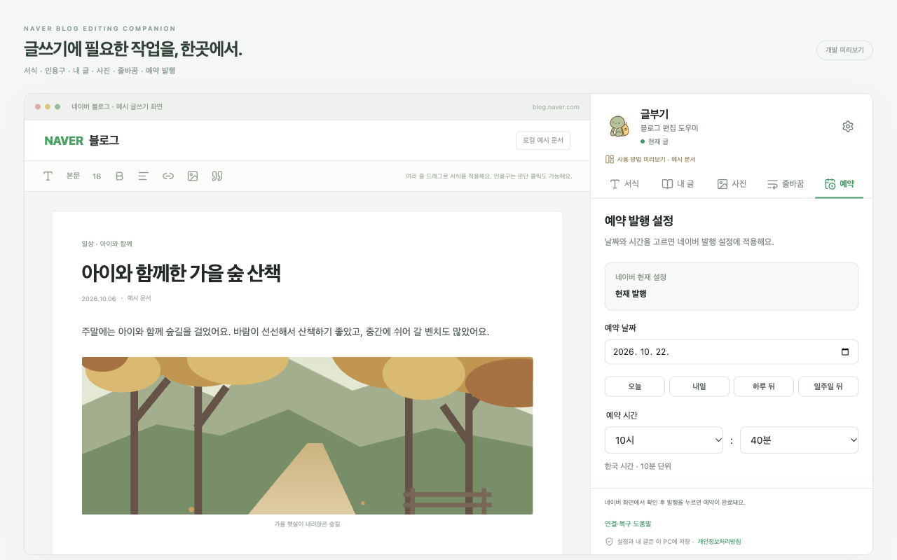

내 글 링크 연속 삽입 개선
링크 미리보기 삽입 후 카드 바로 뒤의 커서를 자동으로 기억합니다. 본문을 다시 클릭하지 않고 다음 글 링크를 이어서 넣을 수 있습니다. 기존 문구와 서식, 카드 순서 및 마지막 카드 되돌리기를 확인했습니다. 권한과 데이터 처리 범위는 변경하지 않았습니다. 1.0.2 업데이트를 2026-10-27 심사에 제출했습니다. 현재 검토 대기 중이며 승인 후 자동 게시됩니다.
편집 신뢰성 문제 6건 수정
되돌리기와 서식의 실제 반영을 확인하며, 사용자 직접 입력은 자동 복원으로 지우지 않습니다. 지연된 사진 AI·예약 설정은 확인을 기다리고, 미확정 입력의 중복 실행과 잘못된 복원 안내를 차단합니다. 공백 위치와 수를 포함해 원문을 검사합니다.
전체 줄바꿈 중간 실패 대응
고정 대기 대신 커서와 Enter의 실제 반영을 기다립니다. 문단이 다시 그려져도 고유 ID와 원문을 확인해 이어가며, 완료된 각 줄바꿈의 위치를 검사합니다. 직접 입력이나 미확인 상태에서는 원고를 보존하고 복구를 안내합니다.
줄바꿈 미리보기 위치 표시
설정 적용 예시를 실제 계산 결과로 갱신합니다. ↵로 실제 줄바꿈 위치를 표시하고, 줄바꿈 위치와 모바일 참고 화면을 구분합니다. 부분 선택의 앞뒤 문맥과 전후 본문 폭을 유지합니다.
작업 실패 복구 안내 개선
작업 결과를 확인하지 못하면 본문 확인과 네이버 상단 ‘저장’(임시저장) 순서를 안내합니다. 저장 완료 확인 후 ‘저장한 글 새로고침’으로 다시 연결합니다. 단순 연결 문제는 ‘연결 다시 확인’으로 재검사합니다.
응답이 유실된 작업의 중복 실행을 막고, 링크 이미지의 완료 확인 대기를 늘렸습니다. 자동 검사 603개 / 45개 파일, 타입·빌드·패키지 검사를 통과했습니다.
설치와 제출 자료
설치 ZIP · 스토어 자료 ZIP · 스토어 소개 · 심사 안내 · 개인정보처리방침
2026-10-22 개인정보처리방침을 글부기 소개 사이트로 통합했습니다. 공개 처리방침은 로그인 없이 읽을 수 있습니다. 1.0.2 연속 링크 삽입 개선 업데이트를 심사에 제출했습니다.
화면은 제품의 예시 문서 미리보기입니다. 개인 원고나 로그인 정보를 포함하지 않습니다.





설치 ZIP SHA-256
9fc9193b0a3ba7c298b26a8c116e5a2908b30f9eeb16148ecd3baee3130f49c5